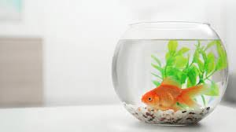
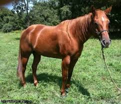

Bacon Q Dog

Bacon Q. Dog is a 9yr old labradoodle. He prefers to spend his days lounging among the three different beds/couches that his family has gifted him. He enjoys a walk or two around the neighborhood, as long as he can pretend that he doesn't see any of the other animals to avoid the embarrassment of not wanting to admit he has no wolf-like skills in chasing them.
At night just as the rest of the family is ready to relax, Bacon suddenly wants to release all of his energy. He will place his toys on a mini couch and frantically drag the couch around, giving his toys "a ride." There is also a lot of rolling. Lots and lots of rolling.
Photo Gallery


The Four Musketeers

Bacon loves the four musketeers, his favorite cats (and in fact) the only cats he likes.
Fluffy

He is also friends with our neighbor's dog Fluffy, who is so nice that she even gave Bacon a flower.
Guppy
Bacon also loves to watch Guppy. He is very curious about him and will sit in awe, watching him for hours at a time.
Horsey
When Bacon goes to the farm, he will visit the family horse, Horsey. They often race around the green pastures, bacon will lose but they still have a lot of fun.